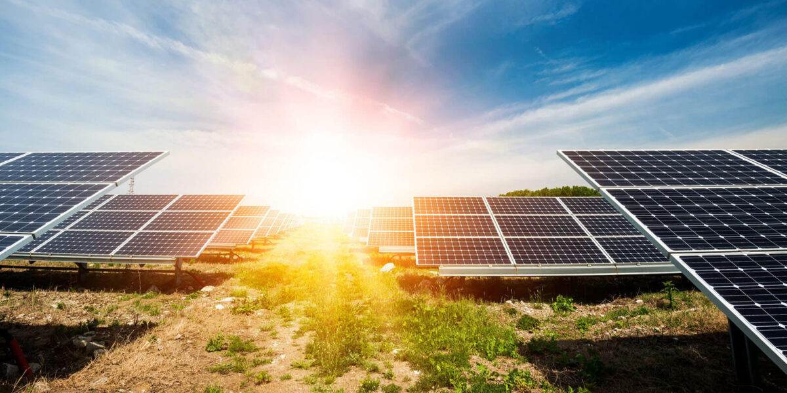

Czy budowa farmy PV się opłaca?
W Polsce jeszcze 10 lat temu niewiele osób interesowało się farmami fotowoltaicznymi. Ówczesny koszt takiej inwestycji wynosił ok. 20 mln zł za 1 MW instalacji PV. Produkcja prądu z takiej instalacji nie była opłacalna, ponieważ była zbyt droga w porównaniu do produkcji energii z węgla. Obecnie koszty elektrowni słonecznej wynoszą ok. 3 mln zł za 1 MW. Z czasem taka inwestycja zaczęła być opłacalna, już pod koniec 2018 roku powstało ok. 600 takich farm fotowoltaicznych o łącznej mocy 150 MW. Stopa zwrotu to ok. 7-9 lat – przyłączenia do energetyki elektrowni słonecznych nabierają tempa i wyprzedzają turbiny wiatrowe. W ramach programów unijnych można otrzymać dofinansowanie nawet na poziomie 85% na budowę farmy fotowoltaicznej do produkcji energii elektrycznej, przeznaczonej na spełnianie potrzeb prywatnych firm energetycznych, czy operatorów energetycznych.
Koszty kwalifikowane projektów farm fotowoltaicznych, finansowane z funduszy unijnych i pieniędzy gminnych są następujące:
-zakup gruntu nieużytku rolnego w celu budowy elektrowni słonecznej
-dokumentacja projektowa zawierająca projekt elektrowni i warunki zabudowy
-inwertery, moduły fotowoltaiczne i cały osprzęt potrzebny do budowy farmy
-instalacja i montaż